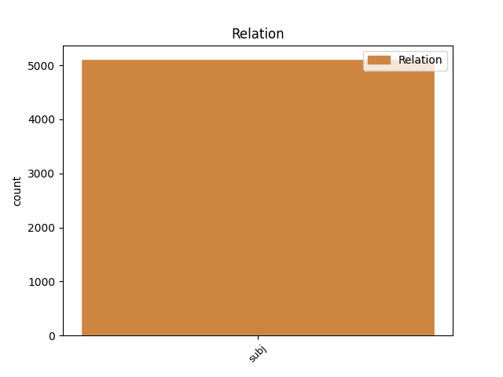

Distribution of features within this leaf

Agreement Rules sorted by frequency.
- When the dependent token is the subject(subj) of the head token, and the dependent token is NOUN.
1 Dacă _ _ _ _ 0 _ _ _
2 V _ _ _ _ 0 _ _ _
3 este _ _ _ _ 0 _ _ _
4 aproape _ _ _ _ 0 _ _ _
5 de _ _ _ _ 0 _ _ _
6 zero _ _ _ _ 0 _ _ _
7 ( _ _ _ _ 0 _ _ _
8 V _ _ _ _ 0 _ _ _
9 < _ _ _ _ 0 _ _ _
10 35% _ _ _ _ 0 _ _ _
11 ) _ _ _ _ 0 _ _ _
12 , _ _ _ _ 0 _ _ _
13 atunci _ _ _ _ 0 _ _ _
14 populația _ _ _ _ 0 _ _ _
15 studiată _ _ _ _ 0 _ _ _
16 statistic _ _ _ _ 0 _ _ _
17 este _ _ _ _ 0 _ _ _
18 omogenă _ _ _ _ 0 _ _ _
19 și _ _ _ _ 0 _ _ _
20 media medie NOUN Ncfsry Case=Acc,Nom|Definite=Def|Gender=Fem|Number=Sing 22 subj _ _
21 m _ _ _ _ 0 _ _ _
22 este fi AUX Vmip3s Mood=Ind|Number=Sing|Person=3|Tense=Pres|VerbForm=Fin 0 _ _ _
23 reprezentativă _ _ _ _ 0 _ _ _
24 pentru _ _ _ _ 0 _ _ _
25 această _ _ _ _ 0 _ _ _
26 populație _ _ _ _ 0 _ _ _
27 . _ _ _ _ 0 _ _ _
1 Ridicând _ _ _ _ 0 _ _ _
2 la _ _ _ _ 0 _ _ _
3 pătrat _ _ _ _ 0 _ _ _
4 deviațiile _ _ _ _ 0 _ _ _
5 individuale _ _ _ _ 0 _ _ _
6 acestea acesta PRON Pd3fpr Case=Acc,Nom|Gender=Fem|Number=Plur|Person=3|PronType=Dem 7 subj _ _
7 devin deveni VERB Vmip3p Mood=Ind|Number=Plur|Person=3|Tense=Pres|VerbForm=Fin 0 _ _ _
8 pozitive _ _ _ _ 0 _ _ _
9 ( _ _ _ _ 0 _ _ _
10 sau _ _ _ _ 0 _ _ _
11 zero _ _ _ _ 0 _ _ _
12 ) _ _ _ _ 0 _ _ _
13 . _ _ _ _ 0 _ _ _
1 problema _ _ _ _ 0 _ _ _
2 de _ _ _ _ 0 _ _ _
3 probabilitate _ _ _ _ 0 _ _ _
4 este fi AUX Vmip3s Mood=Ind|Number=Sing|Person=3|Tense=Pres|VerbForm=Fin 0 _ _ _
5 dacă _ _ _ _ 0 _ _ _
6 scoatem _ _ _ _ 0 _ _ _
7 o _ _ _ _ 0 _ _ _
8 bilă _ _ _ _ 0 _ _ _
9 , _ _ _ _ 0 _ _ _
10 care _ _ _ _ 0 _ _ _
11 este fi AUX Vmip3s Mood=Ind|Number=Sing|Person=3|Tense=Pres|VerbForm=Fin 4 subj _ _
12 șansa _ _ _ _ 0 _ _ _
13 ca _ _ _ _ 0 _ _ _
14 aceasta _ _ _ _ 0 _ _ _
15 să _ _ _ _ 0 _ _ _
16 fie _ _ _ _ 0 _ _ _
17 albă _ _ _ _ 0 _ _ _
18 ? _ _ _ _ 0 _ _ _
1 Chiar _ _ _ _ 0 _ _ _
2 și _ _ _ _ 0 _ _ _
3 în _ _ _ _ 0 _ _ _
4 aceste _ _ _ _ 0 _ _ _
5 condiții _ _ _ _ 0 _ _ _
6 , _ _ _ _ 0 _ _ _
7 au _ _ _ _ 0 _ _ _
8 rămas _ _ _ _ 0 _ _ _
9 în _ _ _ _ 0 _ _ _
10 picioare _ _ _ _ 0 _ _ _
11 multe _ _ _ _ 0 _ _ _
12 clădiri _ _ _ _ 0 _ _ _
13 importante _ _ _ _ 0 _ _ _
14 și _ _ _ _ 0 _ _ _
15 , _ _ _ _ 0 _ _ _
16 pe _ _ _ _ 0 _ _ _
17 bună _ _ _ _ 0 _ _ _
18 dreptate _ _ _ _ 0 _ _ _
19 , _ _ _ _ 0 _ _ _
20 Iașii Iași PROPN Npmpry Case=Acc,Nom|Definite=Def|Gender=Masc|Number=Plur 21 subj _ _
21 sunt fi VERB Vmip3p Mood=Ind|Number=Plur|Person=3|Tense=Pres|VerbForm=Fin 0 _ _ _
22 considerați _ _ _ _ 0 _ _ _
23 un _ _ _ _ 0 _ _ _
24 adevărat _ _ _ _ 0 _ _ _
25 muzeu _ _ _ _ 0 _ _ _
26 ; _ _ _ _ 0 _ _ _
27 în _ _ _ _ 0 _ _ _
28 fiecare _ _ _ _ 0 _ _ _
29 colț _ _ _ _ 0 _ _ _
30 al _ _ _ _ 0 _ _ _
31 său _ _ _ _ 0 _ _ _
32 se _ _ _ _ 0 _ _ _
33 simt _ _ _ _ 0 _ _ _
34 urmele _ _ _ _ 0 _ _ _
35 trecerii _ _ _ _ 0 _ _ _
36 unei _ _ _ _ 0 _ _ _
37 personalități _ _ _ _ 0 _ _ _
38 de _ _ _ _ 0 _ _ _
39 seamă _ _ _ _ 0 _ _ _
40 a _ _ _ _ 0 _ _ _
41 literaturii _ _ _ _ 0 _ _ _
42 , _ _ _ _ 0 _ _ _
43 științei _ _ _ _ 0 _ _ _
44 , _ _ _ _ 0 _ _ _
45 filozofiei _ _ _ _ 0 _ _ _
46 , _ _ _ _ 0 _ _ _
47 istoriei _ _ _ _ 0 _ _ _
48 sau _ _ _ _ 0 _ _ _
49 politicii _ _ _ _ 0 _ _ _
50 românești _ _ _ _ 0 _ _ _
51 . _ _ _ _ 0 _ _ _
1 Grigore _ _ _ _ 0 _ _ _
2 Niculescu _ _ _ _ 0 _ _ _
3 , _ _ _ _ 0 _ _ _
4 de _ _ _ _ 0 _ _ _
5 Istorie _ _ _ _ 0 _ _ _
6 și _ _ _ _ 0 _ _ _
7 Ion _ _ _ _ 0 _ _ _
8 Costescu _ _ _ _ 0 _ _ _
9 , _ _ _ _ 0 _ _ _
10 de _ _ _ _ 0 _ _ _
11 Muzică _ _ _ _ 0 _ _ _
12 ― _ _ _ _ 0 _ _ _
13 toți tot DET Di3mpr Case=Acc,Nom|Gender=Masc|Number=Plur|Person=3|PronType=Ind 15 subj _ _
14 adevărați _ _ _ _ 0 _ _ _
15 stâlpi stâlp NOUN Ncmp-n Definite=Ind|Gender=Masc|Number=Plur 0 _ _ _
16 ai _ _ _ _ 0 _ _ _
17 liceului _ _ _ _ 0 _ _ _
18 , _ _ _ _ 0 _ _ _
19 impresionante _ _ _ _ 0 _ _ _
20 figuri _ _ _ _ 0 _ _ _
21 , _ _ _ _ 0 _ _ _
22 care _ _ _ _ 0 _ _ _
23 au _ _ _ _ 0 _ _ _
24 înscris _ _ _ _ 0 _ _ _
25 o _ _ _ _ 0 _ _ _
26 pagină _ _ _ _ 0 _ _ _
27 de _ _ _ _ 0 _ _ _
28 neuitat _ _ _ _ 0 _ _ _
29 în _ _ _ _ 0 _ _ _
30 cultura _ _ _ _ 0 _ _ _
31 românească _ _ _ _ 0 _ _ _
32 . _ _ _ _ 0 _ _ _
Disagree Examples:
1 Fața față NOUN Ncfsry Case=Acc,Nom|Definite=Def|Gender=Fem|Number=Sing 28 subj _ _
2 aceea _ _ _ _ 0 _ _ _
3 ca _ _ _ _ 0 _ _ _
4 de _ _ _ _ 0 _ _ _
5 oaie _ _ _ _ 0 _ _ _
6 de _ _ _ _ 0 _ _ _
7 pe _ _ _ _ 0 _ _ _
8 ecran _ _ _ _ 0 _ _ _
9 , _ _ _ _ 0 _ _ _
10 mulțumită _ _ _ _ 0 _ _ _
11 de _ _ _ _ 0 _ _ _
12 sine _ _ _ _ 0 _ _ _
13 , _ _ _ _ 0 _ _ _
14 și _ _ _ _ 0 _ _ _
15 sentimentul _ _ _ _ 0 _ _ _
16 terifiant _ _ _ _ 0 _ _ _
17 de _ _ _ _ 0 _ _ _
18 forță _ _ _ _ 0 _ _ _
19 pe _ _ _ _ 0 _ _ _
20 care _ _ _ _ 0 _ _ _
21 -l _ _ _ _ 0 _ _ _
22 dădea _ _ _ _ 0 _ _ _
23 armata _ _ _ _ 0 _ _ _
24 Eurasiană _ _ _ _ 0 _ _ _
25 din _ _ _ _ 0 _ _ _
26 spatele _ _ _ _ 0 _ _ _
27 ei _ _ _ _ 0 _ _ _
28 erau fi AUX Vmii3p Mood=Ind|Number=Plur|Person=3|Tense=Imp|VerbForm=Fin 0 _ _ _
29 prea _ _ _ _ 0 _ _ _
30 mult _ _ _ _ 0 _ _ _
31 : _ _ _ _ 0 _ _ _
32 și _ _ _ _ 0 _ _ _
33 , _ _ _ _ 0 _ _ _
34 pe _ _ _ _ 0 _ _ _
35 urmă _ _ _ _ 0 _ _ _
36 , _ _ _ _ 0 _ _ _
37 până _ _ _ _ 0 _ _ _
38 și _ _ _ _ 0 _ _ _
39 vederea _ _ _ _ 0 _ _ _
40 lui _ _ _ _ 0 _ _ _
41 Goldstein _ _ _ _ 0 _ _ _
42 sau _ _ _ _ 0 _ _ _
43 gândul _ _ _ _ 0 _ _ _
44 la _ _ _ _ 0 _ _ _
45 el _ _ _ _ 0 _ _ _
46 provocau _ _ _ _ 0 _ _ _
47 automat _ _ _ _ 0 _ _ _
48 frică _ _ _ _ 0 _ _ _
49 și _ _ _ _ 0 _ _ _
50 mânie _ _ _ _ 0 _ _ _
51 . _ _ _ _ 0 _ _ _
1 Fața _ _ _ _ 0 _ _ _
2 aceea _ _ _ _ 0 _ _ _
3 ca _ _ _ _ 0 _ _ _
4 de _ _ _ _ 0 _ _ _
5 oaie _ _ _ _ 0 _ _ _
6 de _ _ _ _ 0 _ _ _
7 pe _ _ _ _ 0 _ _ _
8 ecran _ _ _ _ 0 _ _ _
9 , _ _ _ _ 0 _ _ _
10 mulțumită _ _ _ _ 0 _ _ _
11 de _ _ _ _ 0 _ _ _
12 sine _ _ _ _ 0 _ _ _
13 , _ _ _ _ 0 _ _ _
14 și _ _ _ _ 0 _ _ _
15 sentimentul _ _ _ _ 0 _ _ _
16 terifiant _ _ _ _ 0 _ _ _
17 de _ _ _ _ 0 _ _ _
18 forță _ _ _ _ 0 _ _ _
19 pe _ _ _ _ 0 _ _ _
20 care _ _ _ _ 0 _ _ _
21 -l _ _ _ _ 0 _ _ _
22 dădea _ _ _ _ 0 _ _ _
23 armata _ _ _ _ 0 _ _ _
24 Eurasiană _ _ _ _ 0 _ _ _
25 din _ _ _ _ 0 _ _ _
26 spatele _ _ _ _ 0 _ _ _
27 ei _ _ _ _ 0 _ _ _
28 erau _ _ _ _ 0 _ _ _
29 prea _ _ _ _ 0 _ _ _
30 mult _ _ _ _ 0 _ _ _
31 : _ _ _ _ 0 _ _ _
32 și _ _ _ _ 0 _ _ _
33 , _ _ _ _ 0 _ _ _
34 pe _ _ _ _ 0 _ _ _
35 urmă _ _ _ _ 0 _ _ _
36 , _ _ _ _ 0 _ _ _
37 până _ _ _ _ 0 _ _ _
38 și _ _ _ _ 0 _ _ _
39 vederea vedere NOUN Ncfsry Case=Acc,Nom|Definite=Def|Gender=Fem|Number=Sing 46 subj _ _
40 lui _ _ _ _ 0 _ _ _
41 Goldstein _ _ _ _ 0 _ _ _
42 sau _ _ _ _ 0 _ _ _
43 gândul _ _ _ _ 0 _ _ _
44 la _ _ _ _ 0 _ _ _
45 el _ _ _ _ 0 _ _ _
46 provocau provoca VERB Vmii3p Mood=Ind|Number=Plur|Person=3|Tense=Imp|VerbForm=Fin 0 _ _ _
47 automat _ _ _ _ 0 _ _ _
48 frică _ _ _ _ 0 _ _ _
49 și _ _ _ _ 0 _ _ _
50 mânie _ _ _ _ 0 _ _ _
51 . _ _ _ _ 0 _ _ _
1 Nici _ _ _ _ 0 _ _ _
2 Frăția frăție NOUN Ncfsry Case=Acc,Nom|Definite=Def|Gender=Fem|Number=Sing 7 subj _ _
3 și _ _ _ _ 0 _ _ _
4 nici _ _ _ _ 0 _ _ _
5 cartea _ _ _ _ 0 _ _ _
6 nu _ _ _ _ 0 _ _ _
7 erau fi AUX Vmii3p Mood=Ind|Number=Plur|Person=3|Tense=Imp|VerbForm=Fin 0 _ _ _
8 subiecte _ _ _ _ 0 _ _ _
9 despre _ _ _ _ 0 _ _ _
10 care _ _ _ _ 0 _ _ _
11 vreun _ _ _ _ 0 _ _ _
12 membru _ _ _ _ 0 _ _ _
13 al _ _ _ _ 0 _ _ _
14 Partidului _ _ _ _ 0 _ _ _
15 ar _ _ _ _ 0 _ _ _
16 fi _ _ _ _ 0 _ _ _
17 vorbit _ _ _ _ 0 _ _ _
18 dacă _ _ _ _ 0 _ _ _
19 putea _ _ _ _ 0 _ _ _
20 cumva _ _ _ _ 0 _ _ _
21 să _ _ _ _ 0 _ _ _
22 nu _ _ _ _ 0 _ _ _
23 vorbească _ _ _ _ 0 _ _ _
24 . _ _ _ _ 0 _ _ _
1 Un _ _ _ _ 0 _ _ _
2 extaz extaz NOUN Ncms-n Definite=Ind|Gender=Masc|Number=Sing 25 subj _ _
3 hidos _ _ _ _ 0 _ _ _
4 al _ _ _ _ 0 _ _ _
5 fricii _ _ _ _ 0 _ _ _
6 și _ _ _ _ 0 _ _ _
7 răzbunării _ _ _ _ 0 _ _ _
8 , _ _ _ _ 0 _ _ _
9 dorința _ _ _ _ 0 _ _ _
10 de _ _ _ _ 0 _ _ _
11 a _ _ _ _ 0 _ _ _
12 ucide _ _ _ _ 0 _ _ _
13 , _ _ _ _ 0 _ _ _
14 de _ _ _ _ 0 _ _ _
15 a _ _ _ _ 0 _ _ _
16 tortura _ _ _ _ 0 _ _ _
17 , _ _ _ _ 0 _ _ _
18 de _ _ _ _ 0 _ _ _
19 a _ _ _ _ 0 _ _ _
20 zdrobi _ _ _ _ 0 _ _ _
21 fețele _ _ _ _ 0 _ _ _
22 cu _ _ _ _ 0 _ _ _
23 barosul _ _ _ _ 0 _ _ _
24 se _ _ _ _ 0 _ _ _
25 scurgeau scurge VERB Vmii3p Mood=Ind|Number=Plur|Person=3|Tense=Imp|VerbForm=Fin 0 _ _ _
26 ca _ _ _ _ 0 _ _ _
27 un _ _ _ _ 0 _ _ _
28 curent _ _ _ _ 0 _ _ _
29 electric _ _ _ _ 0 _ _ _
30 prin _ _ _ _ 0 _ _ _
31 întregul _ _ _ _ 0 _ _ _
32 grup _ _ _ _ 0 _ _ _
33 de _ _ _ _ 0 _ _ _
34 oameni _ _ _ _ 0 _ _ _
35 , _ _ _ _ 0 _ _ _
36 transformându _ _ _ _ 0 _ _ _
37 -l _ _ _ _ 0 _ _ _
38 pe _ _ _ _ 0 _ _ _
39 fiecare _ _ _ _ 0 _ _ _
40 , _ _ _ _ 0 _ _ _
41 chiar _ _ _ _ 0 _ _ _
42 împotriva _ _ _ _ 0 _ _ _
43 voinței _ _ _ _ 0 _ _ _
44 sale _ _ _ _ 0 _ _ _
45 , _ _ _ _ 0 _ _ _
46 într- _ _ _ _ 0 _ _ _
47 un _ _ _ _ 0 _ _ _
48 dement _ _ _ _ 0 _ _ _
49 care _ _ _ _ 0 _ _ _
50 se _ _ _ _ 0 _ _ _
51 schimonosea _ _ _ _ 0 _ _ _
52 și _ _ _ _ 0 _ _ _
53 zbiera _ _ _ _ 0 _ _ _
54 . _ _ _ _ 0 _ _ _
1 În _ _ _ _ 0 _ _ _
2 Nouvorbă _ _ _ _ 0 _ _ _
3 , _ _ _ _ 0 _ _ _
4 numele nume NOUN Ncmsry Case=Acc,Nom|Definite=Def|Gender=Masc|Number=Sing 6 subj _ _
5 lor _ _ _ _ 0 _ _ _
6 erau fi AUX Vmii3p Mood=Ind|Number=Plur|Person=3|Tense=Imp|VerbForm=Fin 0 _ _ _
7 Minadev _ _ _ _ 0 _ _ _
8 , _ _ _ _ 0 _ _ _
9 Minipax _ _ _ _ 0 _ _ _
10 , _ _ _ _ 0 _ _ _
11 Miniiub _ _ _ _ 0 _ _ _
12 și _ _ _ _ 0 _ _ _
13 Minabund _ _ _ _ 0 _ _ _
14 . _ _ _ _ 0 _ _ _